Quintana del Puente donde me hospede, es un pueblo muy tranquilo cercano a la autovía que une Valladolid con Burgos. Tiene un puente medieval y una iglesia románica. Además cuenta con numerosos caminos senderistas ya que hay mucha naturaleza alrededor.
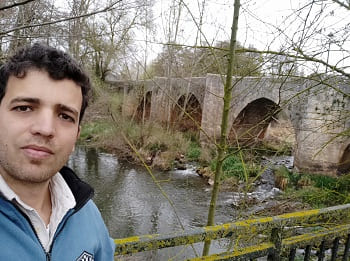
Muy cercano se encuentra el pueblo de Palenzuela. Este pueblo esta asentado en el antiguo pueblo de Pallentia que resistió a los romanos. En tiempos ya de la edad media con la reconquista sería de gran importancia debido a su cercanía al río Arlanza y al tener un posición defensiva al estar en una montaña. Sería construida una ermita románica que se encuentra a las afueras que existe hoy en día: la ermita de la virgen de Allende del río. Muy cercana se encuentra el puente y el arco de entrada al pueblo. Al fondo del pueblo se encuentran las ruinas del castillo que se ven en una de las siguientes imágenes.
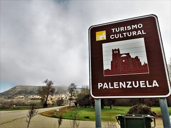
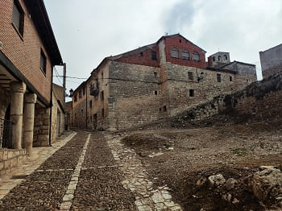
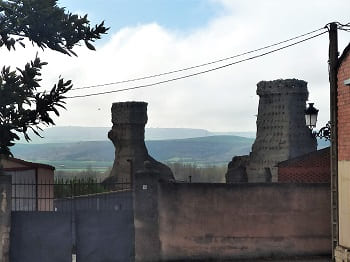
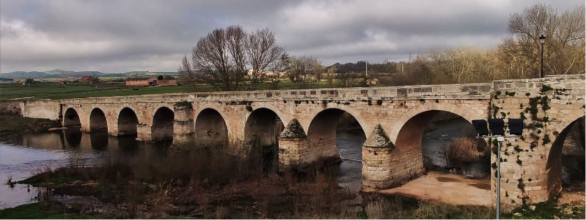
Dentro de la ciudad tenemos un par de iglesias góticas de gran importancia, la de Santa Eulalia de la que hoy en día solo quedan parte de los muros exteriores, y la de San Juan Bautista que alberga el retablo de la otra iglesia.
En las siguientes imágenes la entrada a la iglesia, su puerta y el detalle de los escudos nobiliarios labrados debajo de las columnas decortativas de la puerta.
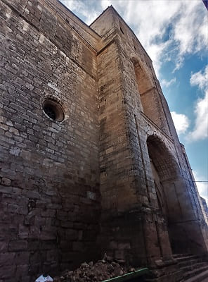
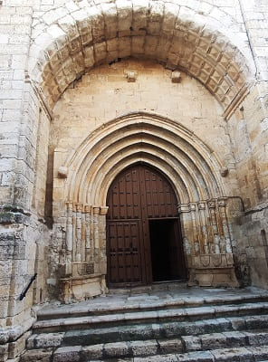
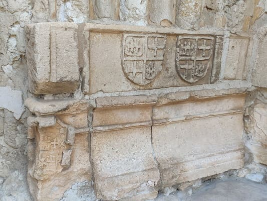
Esta iglesia de San Juan Bautista es una de las más bonitas de toda Palencia, con una capilla con diferentes sepulturas de nobles de la ciudad así como otras sepulturas en los otros lados de la nave con toda clase de detalles góticos. Tiene un retablo muy antiguo en la capilla con diferentes pinturas, y otro de madera de la otra iglesia que ha sido recientemente restaurado. También encontramos una pila Bautismal muy antigua y restos de piedra labrada con diferentes tallas que perteneció a la sacristía y que todavía se están pensando que van a hacer con ellos ya que la sacristía esta siendo restaurada. En ella se encuentra la sepultura medieval de algún noble que podría tener descendencia real por la forma de la sepultura.
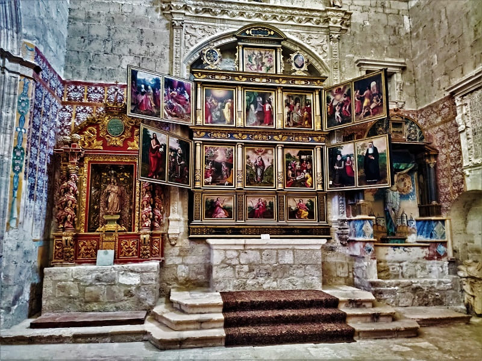
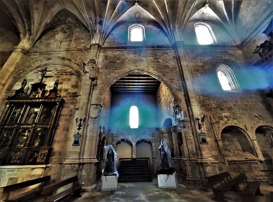
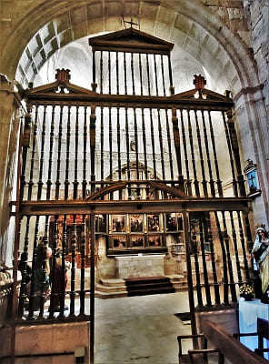
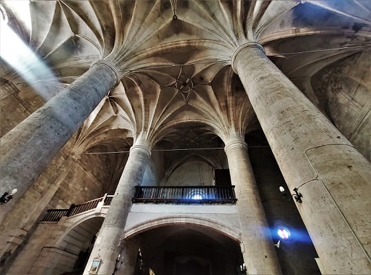
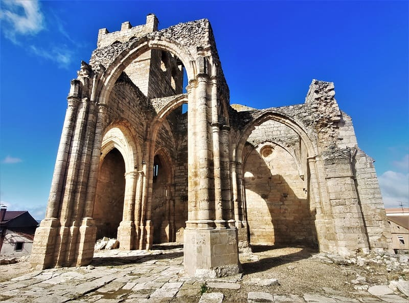
Después visitaría lo que queda de la antigua iglesia de santa Eulalia, que se ve en la imagen anterior.
El siguiente punto a visitar sería el monasterio ciesterciense de Santa María la Real. De camino pararía en Villahoz para ver su iglesia gótica. Por fuera cuenta con una puerta con arco de piedra labrado y dentro techo con arcos góticos y retablos renacentista y barrocos.
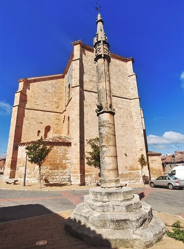
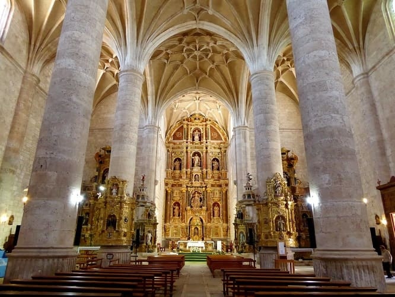
Continuando estaría Zael, otro pueblo con una iglesia románica bien cuidada a la que recientemente le han puesto iluminación exterior.
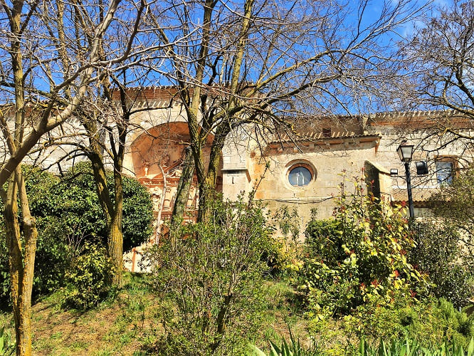
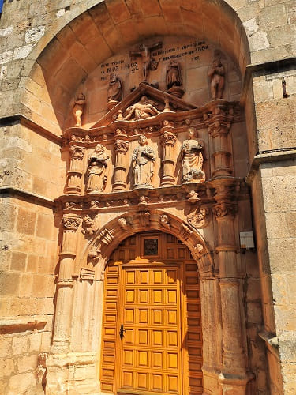
Y sin más llegaría a Villamayor de Montes, donde se encuentra el monasterio de Santa María la Real. Este monasterio esta habitado por monjas, que hacen de guía. La iglesia del monasterio suele estar abierta y lo más destacado a parte de la fachada es el claustro del monasterio de estilo románico. Es un estilo muy sobrio con columnas dobles como en otros monasterios de la zona como el de Silos, si bien los capiles son solamente vegetales sin ningún gran detalle. Esto es debido también a la manera de vivir del Cister, sin lujos.
 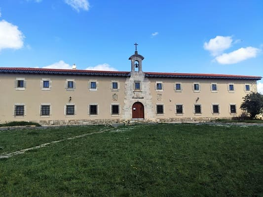
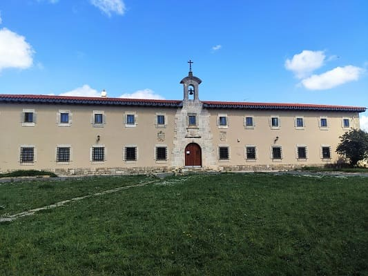
Una vez visto el monasterio daría un paseo por el pueblo que no tiene nada destacable. Incluso la iglesia del pueblo no puede compararse a las iglesias de los pueblos vistos anteriormente.
El siguiente pueblo sería Covarrubias. Este pueblo esta en el ranking de pueblos más bonitos de España. A parte del patrimonio que tiene, pasear por sus calles es muy agradable. Es un pueblo de caracter medieval en que casi todas sus casas han mantenido el aspecto antiguo hasta hoy. Me recuerda mucho a muchos pueblos alemanes que visite el año pasado de viejos materiales como madera y adobe con la única diferencia que en Alemania los tejados son más inclinados y aquí más llanos. Destaca el color amarillo en las casas y restaurantes. Para entrar al casco antiguo debemos pasar un arco que esta sobre el edificio del Archivo del Adelantamiento de Castilla, coronado por el escudo de Felipe II que serían los tiempos donde más esplendor tendría. Si bien, su importancia pasa por tiempos de la reconquista donde varios de los nobles que residían iban sumando importancia debido a la cercanía a los reyes.
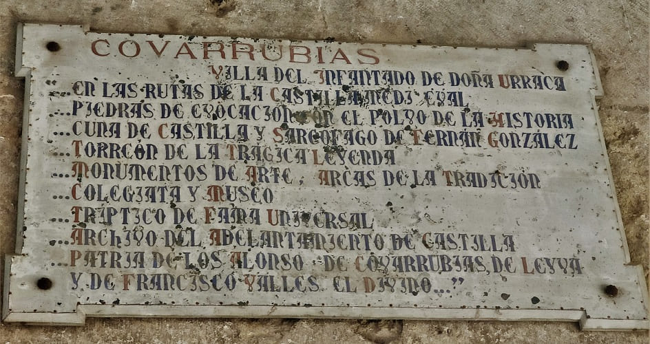
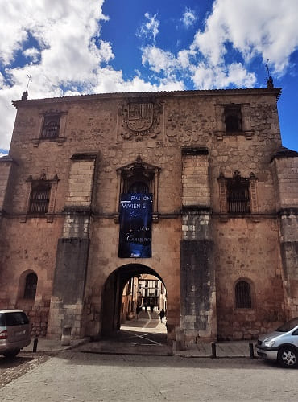
De hecho, cerca de este pueblo se mandaría construir un monasterio, que luego presentare, que sería de los más importantes en la península. Recordemos que Burgos era la capital durante siglos hasta que se reconquistase Toledo y que poco a poco le iría ganando importancia esta última.
La joya del pueblo es la colegiata de San Cosme y San Damian. El interior de la colegiata esta impecable con una nave de estilo gótico y multitud de detalles de este estilo en las sepulturas de los nobles que descansan allí. El claustro es visitable y se hace de forma guiada, pero hay que pagar. El claustro fue construido en los primeros años del XVI, y en él está el sepulcro gótico de la infanta Cristina de Noruega, primera esposa del infante Felipe de Castilla y Suabia, hijo de Fernando III y hermano de Alfonso X el Sabio. Además posee un museo de arte sacro donde se presentan diferentes piezas, como capiteles románicos, tablas de Berruguete, orfebrería del maestro de Calahorra y ropas litúrgicas de los siglos XVI al XVIII.


© 2016 - All Rights Reserved - Diseñada por Sergio López Martínez
El sitio se mantiene gracias a la publicidad, por favor Desactiva Adblock para seguir navegando
He desactivado Adblock![[Valid RSS]](https://www.onepointsync.com/wp-content/uploads/2016/08/valid-rss-rogers.png "Validate my RSS feed")